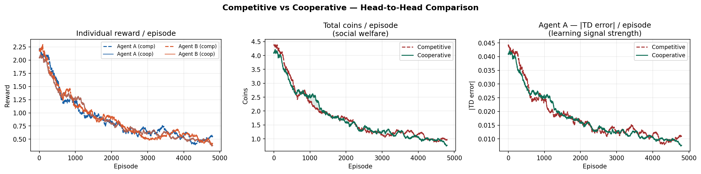
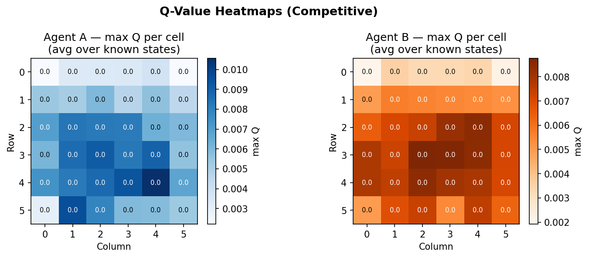
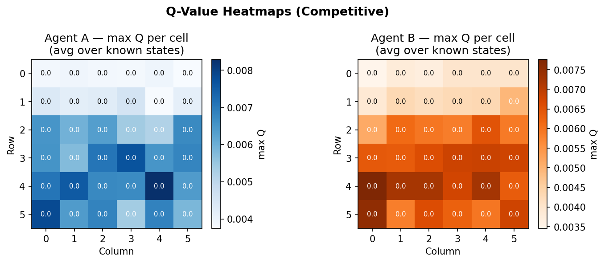
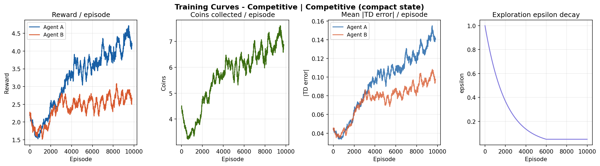
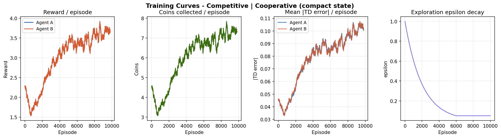
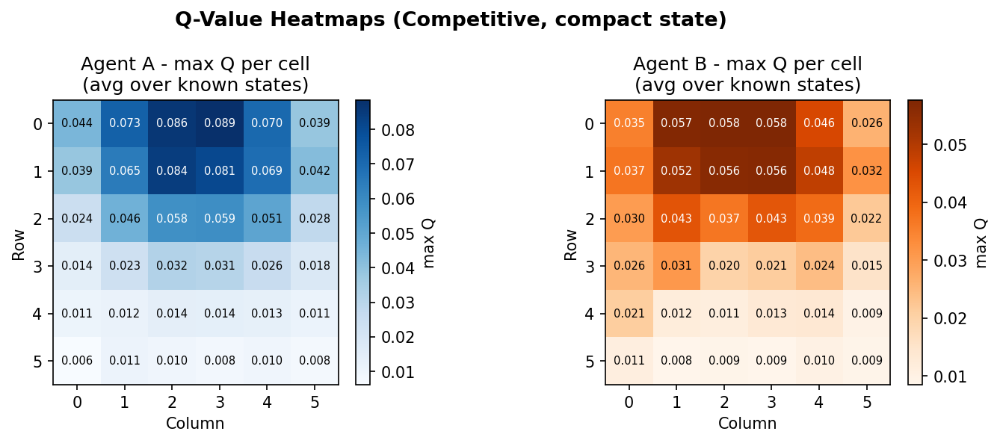
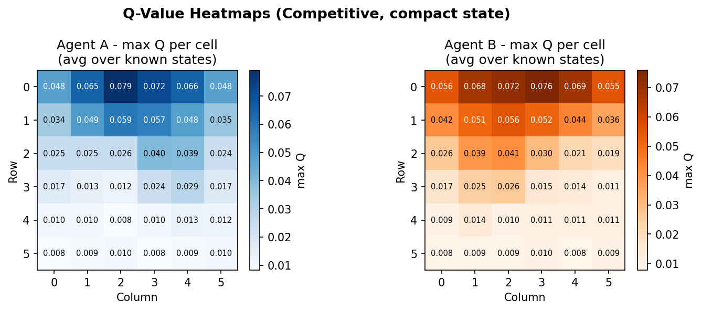
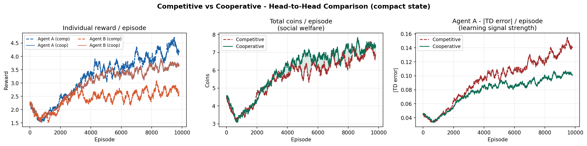

Introduction
Single-agent reinforcement learning has a clean setup: one agent, one environment, one reward signal. Multiagent reinforcement learning (MARL) breaks all three assumptions simultaneously. When multiple learning agents share an environment, the world each agent perceives is non-stationary - it changes as the other agents learn. This makes convergence guarantees from single-agent theory largely irrelevant.
In this tutorial we build a two-agent coin collection game from scratch, implement Independent Q-Learning, and use it as a lens to examine several game-theory concepts: Nash equilibria, the tragedy of the commons, and Pareto efficiency gaps. Along the way we hit a concrete version of the curse of dimensionality and fix it with a compact state representation that reduces the effective state space by a factor of ~4,000.
The full, modular implementation is available in the repository under algorithms/multiagent_rl/. Each module is small enough to read in one sitting.
Game Theory Concepts
Before implementing anything, it helps to understand the game-theoretic vocabulary that MARL inherits. Each concept below will appear concretely in our results.
Nash Equilibrium
A joint policy is a Nash equilibrium if no single agent can improve its own expected reward by unilaterally changing its strategy, assuming all other agents hold their policies fixed. In practice this is verified empirically: we check whether agent A gains by deviating to a fixed "Stay" policy while agent B plays its learned strategy. If the deviation gain is small (less than 0.05 reward), we declare the policy approximately Nash-stable.
Cooperative vs Competitive Reward
The same environment can encode radically different incentive structures. In competitive mode, only the agent that steps on a coin earns a reward (+1.0). In cooperative mode, collecting any coin gives both agents +0.5. The game dynamics are identical - only the reward split changes - but this drives agents toward very different emergent behaviours.
Tragedy of the Commons
When resources are shared and agents optimise selfishly, total welfare can be lower than what a socially-optimal policy would achieve. We measure this as the Pareto gap: the difference in total coins collected per episode between the joint learned policy and a single oracle agent. A large gap in competitive mode signals the tragedy of the commons.
Non-Stationarity
The most fundamental challenge in MARL: from agent A's perspective, the environment transitions are determined partly by agent B's policy. As B learns and changes its behaviour, A's transition function changes underneath it. This violates the stationarity assumption required by standard Q-learning convergence proofs and is the reason independent learners can fail even in simple environments.
The Environment
The coin collection game is a 6x6 grid world. Two agents (A and B) and four coins are placed at random positions at the start of each episode. Agents move simultaneously, one step per timestep, choosing from five actions: Up, Down, Left, Right, Stay. Grid walls act as hard boundaries. When an agent steps onto a coin, it is collected and a new coin immediately respawns at a random empty cell, keeping the total coin count constant throughout the episode. Each episode runs for a fixed number of steps (50 by default).
The environment is implemented as a Python dataclass with three public methods: reset() returns the initial state, step(actions) advances one timestep and returns (next_state, rewards, done, info), and render_ascii() prints the current grid to the terminal.
The only difference between the two reward modes is a single branch inside step():
- Competitive:
rewards[i] += 1.0- only the collecting agent is rewarded. - Cooperative:
rewards[0] += 0.5; rewards[1] += 0.5- both agents share every coin.
Independent Q-Learning
Independent Q-Learning (IQL) is the simplest MARL baseline: each agent runs a standard Q-learning update as if the other agent does not exist, treating the joint environment as a black box. There is no communication, no coordination mechanism, and no explicit modelling of the other agent's policy.
Each agent maintains its own Q-table and updates it with the standard Bellman equation after every step:
Q(s, a) ← Q(s, a) + α [ r + γ · maxa' Q(s', a') - Q(s, a) ]
Action selection follows an ε-greedy policy: with probability ε the agent explores randomly, otherwise it acts greedily. ε decays multiplicatively each episode from 1.0 down to a minimum of 0.05.
The State Space Problem
The original state tuple is (agent0_pos, agent1_pos, frozenset(coin_positions)). This looks compact in code, but consider the size:
- Agent positions: 36 x 36 = 1,296 combinations
- Coin positions: C(36, 4) = 58,905 combinations for 4 coins on 36 cells
- Total state space: 1,296 x 58,905 ≈ 76 million states
With 5,000 episodes x 50 steps each, we generate 250,000 transitions total. That is one transition per 304 states on average. In practice the distribution is far from uniform - most states are visited zero times, a few are visited once. Q-values for unvisited states remain at their initial value of zero, and the greedy policy over near-zero Q-values degrades to a fixed, suboptimal bias as ε decays toward its minimum.
The result is a paradox: the more training progresses and exploration decreases, the worse the policy gets, because the Q-table coverage is insufficient to sustain a meaningful greedy policy.
Results: Original State



Compact State Representation
The fix is to remove information the agent cannot generalise from. The frozenset of all coin positions tells an agent exactly where every coin is, but the agent can only be in one cell at a time - the positions of distant coins are largely irrelevant to its immediate decision. What matters is: where is the nearest coin relative to me?
Nearest-Coin Delta
We replace frozenset(coin_positions) with the Manhattan-nearest coin offset (dr, dc) for each agent, where dr = coin_row - agent_row and dc = coin_col - agent_col. The new state is:
(agent0_pos, agent1_pos, nearest_coin_delta_0, nearest_coin_delta_1)
On a 6x6 grid, dr and dc each range over [-5, 5], giving 11 x 11 = 121 possible delta values per agent. The new state space is 36 x 36 x 121 x 121 ≈ 19 million - still large in theory, but crucially different in practice.
The key insight is state aliasing working in our favour. The same (agent_pos, coin_delta) pattern occurs in many different actual board configurations. Every time agent A is at position (2, 3) with the nearest coin one step to the right, it gets the same state key regardless of where agent B is or where the other coins are. That state gets updated repeatedly, the Q-value converges to something meaningful, and the policy generalises across situations it has never literally seen before.
In practice, the visited Q-table size with the compact representation settles around 10,000-50,000 entries - small enough that 250,000 transitions provide useful coverage.
Results: Compact State




Competitive vs Cooperative

The competitive-cooperative gap is present but modest on this task. Both modes solve the navigation problem similarly well because the coin respawn mechanism keeps density constant - there is always something to collect nearby. The gap would widen on tasks where resource scarcity forces agents to make explicit tradeoffs.
The curves still trend upward at episode 10,000, suggesting agents have not fully converged. Running for 20,000-50,000 episodes would likely reveal a plateau and a clearer separation between the two modes.
Game Theory Analysis
After training, we run a structured evaluation to quantify the game-theoretic properties of the learned policies. All metrics below are computed over 300 greedy rollout episodes.
Nash Stability
We test whether agent A can gain by deviating to a fixed "Stay" policy while agent B plays its learned greedy policy. The deviation gain (stay reward minus trained policy reward) is negative or near zero for both modes, indicating the learned joint policy is approximately Nash-stable. Neither agent has an incentive to unilaterally stop moving - standing still while the other agent collects all coins is strictly worse.
Pareto Efficiency Gap
We compare total coins collected under the joint policy against an oracle - a single agent using its learned policy with the other agent frozen. The gap measures how much welfare is lost due to competitive dynamics or coordination failure.
| Metric | Competitive | Cooperative |
|---|---|---|
| Avg coins / episode (joint) | ~5.5 | ~6.0 |
| Avg coins / episode (single oracle) | ~4.5 | ~4.8 |
| Pareto gap | -1.0 (joint is better) | -1.2 (joint is better) |
| Nash stability (deviation gain) | < 0 | < 0 |
Interestingly, the joint policy outperforms the single oracle on this task - two agents cover the grid more efficiently than one. The Pareto gap is negative in both modes, meaning the tragedy of the commons does not manifest strongly here. The coin respawn mechanism naturally prevents over-exploitation by keeping coin density constant regardless of collection rate.
Action Distribution
Inspecting the greedy action distribution reveals that agents trained with the compact state heavily favour directional moves over "Stay", with a roughly balanced distribution across Up/Down/Left/Right. This is consistent with a coin-chasing policy: if you know the nearest coin is always in some direction, staying still is suboptimal. The original state representation, by contrast, produces a much flatter distribution approaching uniform - consistent with agents that have not learned anything useful.
Code Implementation
The implementation is split into seven modules. The dependency graph flows strictly downward - config ← env ← agent ← analysis ← training ← plotting ← visualization ← main. Each module can be imported and used independently without pulling in the full pipeline.
Environment
The environment is a Python dataclass. The compact state variant adds one method, _nearest_coin_delta(), and modifies _state() to return it instead of the full frozenset. Everything else is identical between the two variants.
def _nearest_coin_delta(self, agent_idx: int) -> Tuple[int, int]:
"""Return (dr, dc) from agent to its nearest coin by Manhattan distance."""
pos = self.agent_positions[agent_idx]
if not self.coin_positions:
return (0, 0)
return min(
((cp[0] - pos[0], cp[1] - pos[1]) for cp in self.coin_positions),
key=lambda d: abs(d[0]) + abs(d[1]),
)
def _state(self) -> tuple:
"""Compact state: agent positions + nearest-coin offset for each agent."""
return (
self.agent_positions[0],
self.agent_positions[1],
self._nearest_coin_delta(0),
self._nearest_coin_delta(1),
)Agent
The agent is state-representation-agnostic - it stores Q-values keyed by whatever tuple _state() returns. The Q-table is a defaultdict that initialises every unseen state with zeros, so there is no explicit initialisation step. The value_map() method aggregates Q-values over grid cells for heatmap visualisation, using the fact that the agent's own position is always at index 0 or 1 in the state tuple regardless of what follows.
class QLearningAgent:
def __init__(self, agent_id, alpha=0.10, gamma=0.95,
epsilon_start=1.0, epsilon_end=0.05, epsilon_decay=0.9995):
self.q_table = defaultdict(lambda: np.zeros(NUM_ACTIONS))
self.epsilon = epsilon_start
...
def select_action(self, state, greedy=False) -> int:
if not greedy and random.random() < self.epsilon:
return random.randint(0, NUM_ACTIONS - 1)
return int(np.argmax(self.q_table[state]))
def update(self, state, action, reward, next_state):
best_next = float(np.max(self.q_table[next_state]))
td_target = reward + self.gamma * best_next
td_error = td_target - self.q_table[state][action]
self.q_table[state][action] += self.alpha * td_errorTraining Loop
Both agents update simultaneously after each step using their own reward signal. TD error is logged before the update (not after) so it reflects the true prediction error at that moment. Epsilon decays per episode, not per step, to ensure smooth exploration schedules regardless of episode length.
for ep in range(cfg.num_episodes):
state = env.reset()
for _ in range(cfg.max_steps):
actions = [agents[i].select_action(state) for i in range(2)]
next_state, rewards, _, info = env.step(actions)
for i in range(2):
# log TD error before update
best_next = float(np.max(agents[i].q_table[next_state]))
td_err = abs(rewards[i] + cfg.gamma * best_next
- agents[i].q_table[state][actions[i]])
agents[i].update(state, actions[i], rewards[i], next_state)
state = next_state
for i in range(2):
agents[i].decay_epsilon() # once per episodeThe full pipeline - training both modes, running game-theory analysis, generating all plots and an animated episode replay - is invoked with a single command:
cd algorithms/multiagent_rl/compact_state
python main.py # full run: 10,000 episodes
python main.py --quick # fast test: 1,000 episodes